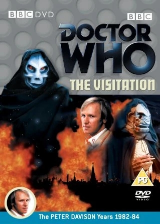
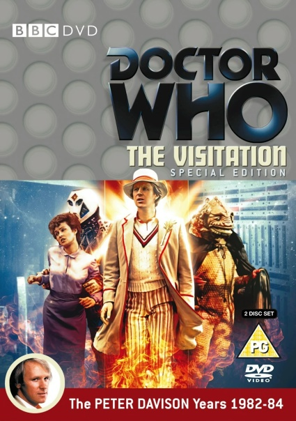
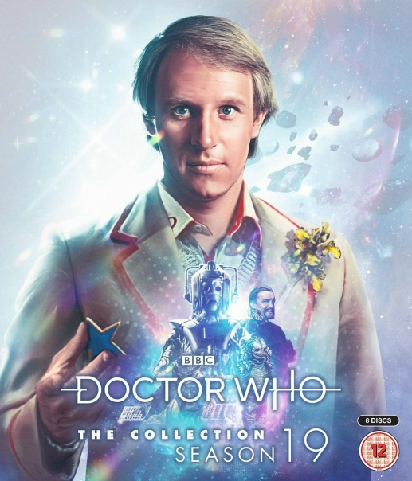
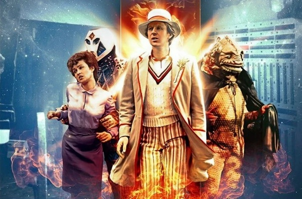
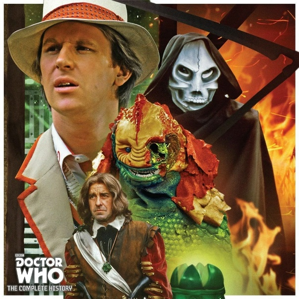

Эра Пятого Доктора (19 сезон)
<<< НАЗАД ||| 4. Кара ||| ДАЛЬШЕ >>>
Субтитры: Русские и Английские |  |
|---|---|
с обновлением визуальных эффектов (cunningmunki) Субтитры: отсутствуют | |
The Visitation
Дата выхода: 15-23 февраля 1982
Формат: 4 эпизода по 25 мин.
 |  |  |
Доктор пытается доставить Тиган в Хитроу, но ТАРДИС промахивается на триста лет — Англия, 1666 год, разгар Великой чумы. В лесу путешественники натыкаются на следы космического корабля и знакомятся с Ричардом Мэйсом — актёром, ставшим разбойником. Вскоре выясняется, что на Земле скрываются беглые преступники-терилептилы, и их план не сулит человечеству ничего хорошего. В этой серии в последний раз за весь классический сериал появляется звуковая отвёртка — терилептил её уничтожает, и продюсер Джон Нэйтан-Тёрнер запретил возвращать её, сочтя слишком лёгким способом решать проблемы. Ричард Мейс — персонаж, которого сценарист Эрик Савард придумал ещё для радиопостановок BBC в 70-х. А маска терилептила стала первым случаем аниматроники в истории сериала.
 VHS - июль 1994 |  DVD - 19 января 2004 |
|---|---|
 DVD-SE - 6 мая 2013 |  Blu-ray - 10 декабря 2018 * Версия в нашей группе |






Трейлер: